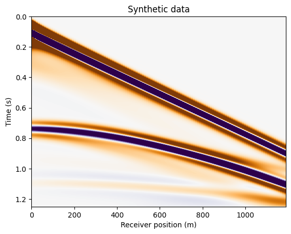
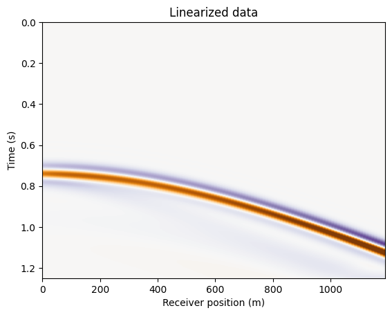
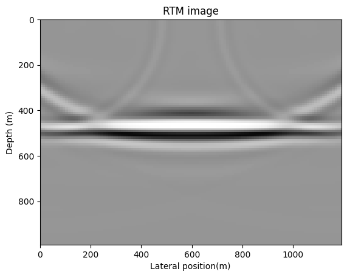
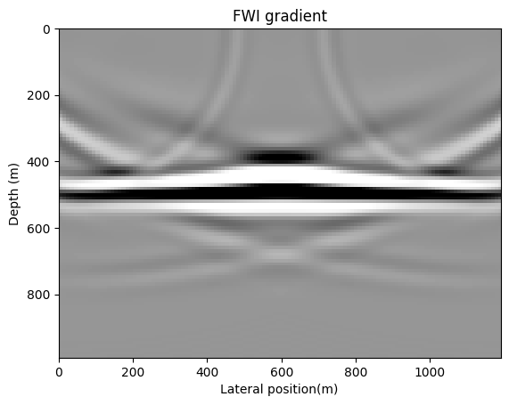
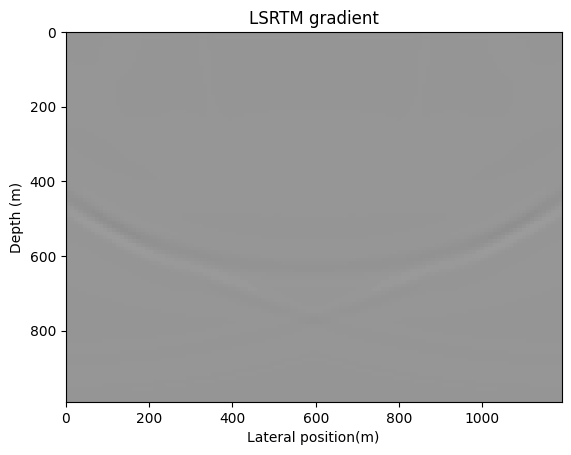
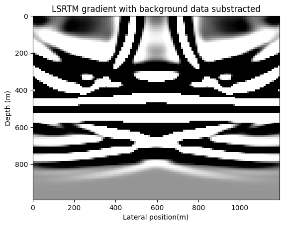
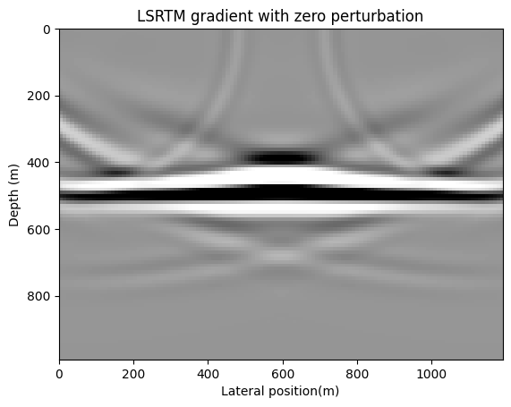
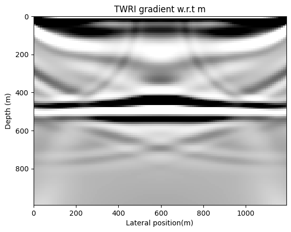
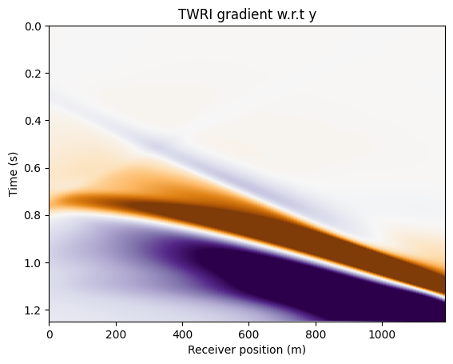

Modeling and inversion with JUDI
title: Overview of JUDI modeling and inversion usage author: Mathias Louboutin, Philipp Witte date: April 2022 –-
This example script is written using Weave.jl and can be converted to different format for documentation and usage This example is converted to a markdown file for the documentation.
Import JUDI, Linear algebra utilities and Plotting
using JUDI, PyPlot, LinearAlgebraCreate a JUDI model structure
In JUDI, a Model structure contains the grid information (origin, spacing, number of gridpoints) and the physical parameters. The squared slowness is always required as the base physical parameter for propagation. In addition, JUDI supports additional physical representations. First we accept density that can either be a direct input Model(n, d, o, m, rho) or an optional keyword argument Model(n,d,o,m;rho=rho). Second, we also provide VTI/TTI kernels parametrized by the THomsen parameters that can be input as keyword arguments Model(n,d,o,m; rho=rho, epsilon=epsilon;delta=delta,theta=theta,phi=phi). Because the thomsen parameters are optional the propagator wil lonloy use the ones provided. For example Model(n,d,o,m; rho=rho, epsilon=epsilon;delta=delta) will infer a VTI propagation
Create discrete parameters
# Set up model structure
n = (120, 100) # (x,y,z) or (x,z)
d = (10., 10.)
o = (0., 0.)
# Velocity [km/s]
v = ones(Float32,n) .+ 0.5f0
v0 = ones(Float32,n) .+ 0.5f0
v[:,Int(round(end/2)):end] .= 3.5f0
rho = (v0 .+ .5f0) ./ 2
# Slowness squared [s^2/km^2]
m = (1f0 ./ v).^2
m0 = (1f0 ./ v0).^2
dm = vec(m0 - m)
# Setup model structure
nsrc = 2 # number of sources
model = Model(n, d, o, m)
model0 = Model(n, d, o, m0)Model (n=(120, 100), d=(10.0f0, 10.0f0), o=(0.0f0, 0.0f0)) with parameters
[:m]Create acquisition geometry
In this simple usage example, we create a simple acquisiton by hand. In practice the acquisition geometry will be defined by the dataset beeing inverted. We show in a spearate tutorial how to use SegyIO.jl to handle SEGY seismic datasets in JUDI.
Create source and receivers positions at the surface
# Set up receiver geometry
nxrec = 120
xrec = range(0f0, stop=(n[1]-1)*d[1], length=nxrec)
yrec = 0f0 # WE have to set the y coordiante to zero (or any number) for 2D modeling
zrec = range(d[1], stop=d[1], length=nxrec)
# receiver sampling and recording time
timeD = 1250f0 # receiver recording time [ms]
dtD = 2f0 # receiver sampling interval [ms]
# Set up receiver structure
recGeometry = Geometry(xrec, yrec, zrec; dt=dtD, t=timeD, nsrc=nsrc)GeometryIC{Float32} wiht 2 sourcesThe source geometry is a but different. Because we want to create a survey with nsrc shot records, we need to convert the vector of sources postions [s0, s1, ... sn] into an array of array [[s0], [s1], ...] so that JUDI understands that this is a set of indepednet nsrc
xsrc = convertToCell(range(0f0, stop=(n[1]-1)*d[1], length=nsrc))
ysrc = convertToCell(range(0f0, stop=0f0, length=nsrc))
zsrc = convertToCell(range(d[1], stop=d[1], length=nsrc))
# Set up source structure
srcGeometry = Geometry(xsrc, ysrc, zsrc; dt=dtD, t=timeD)GeometryIC{Float32} wiht 2 sourcesSource judiVector
Finally, with the geometry defined, we can create a source wavelet (a simple Ricker wavelet here) a our first judiVector In JUDI, a judiVector is the core structure that represent a acquisition-geometry based dataset. This structure encapsulate the physical locations (trace coordinates) and corrsponding data trace in a source-based structure. for a given judiVector d then d[1] will be the shot record for the first source, or in the case of the source term, the first source wavelet and its positon.
# setup wavelet
f0 = 0.01f0 # kHz
wavelet = ricker_wavelet(timeD, dtD, f0)
q = judiVector(srcGeometry, wavelet)judiVector{Float32, Matrix{Float32}} with 2 sourcesModeling
With our survey and subsurface model setup, we can now model and image seismic data. We first define a few options. In this tutorial we will choose to compute gradients/images subsampling the forward wavefield every two time steps subsampling_factor=2 and we fix the computational time step to be 1ms wiuth dt_comp=1.0 know to satisfy the CFL condition for this simple example. In practice, when dt_comp isn't provided, JUDI will compute the CFL condition for the propagation.
# Setup options
opt = Options(subsampling_factor=2, dt_comp=1.0)JUDIOptions(8, false, false, 1000.0, false, "", "shot", false, false, Any[]
, "as", 2, 1, false, 1.0, 0.015f0)Linear Operators The core idea behind JUDI is to abstract seismic inverse problems in term of linear algebra. In its simplest form, seismic inversion can be formulated as
\[\underset{\mathbf{m}}{\text{argmin}} \ \ \phi(\mathbf{m}) = \frac{1}{2} ||\mathbf{P}_r \mathbf{F}(\mathbf{m}) \mathbf{P}_s^{\top} \mathbf{q} - \mathbf{d} ||_2^2 \\ \text{ } \\ \nabla_{\mathbf{m}} \phi(\mathbf{m}) = \mathbf{J}(\mathbf{m}, \mathbf{q})^{\top} (\mathbf{P}_r \mathbf{F}(\mathbf{m}) \mathbf{P}_s^{\top} \mathbf{q} - \mathbf{d})\]
where $\mathbf{P}_r$ is the receiver projection (measurment operator) and $\mathbf{P}_s^{\top}$ is the source injection operator (adjoint of measurment at the source location). Therefore, we bastracted these operation to be able to define these operators
# Setup operators
Pr = judiProjection(recGeometry)
F = judiModeling(model; options=opt)
F0 = judiModeling(model0; options=opt)
Ps = judiProjection(srcGeometry)
J = judiJacobian(Pr*F0*adjoint(Ps), q)JUDI born{Float32} propagator (z * x) -> (src * rec * time)Model and image data
We first model synthetic data using our defined source and true model
# Nonlinear modeling
dobs = Pr*F*adjoint(Ps)*qjudiVector{Float32, Matrix{Float32}} with 2 sourcesPlot the shot record
fig = figure()
imshow(dobs.data[1], vmin=-1, vmax=1, cmap="PuOr", extent=[xrec[1], xrec[end], timeD/1000, 0], aspect="auto")
xlabel("Receiver position (m)")
ylabel("Time (s)")
title("Synthetic data")
display(fig)
Because we have abstracted the linear algebra, we can solve the adjoint wave-equation as well where the data becomes the source. This adjoint solve will be part of the imaging procedure.
# # Adjoint
qad = Ps*adjoint(F)*adjoint(Pr)*dobsjudiVector{Float32, Matrix{Float32}} with 2 sourcesWe can easily now test the adjointness of our operator with the standard dot test. Because we intend to conserve our linear algebra abstraction, judiVector implements all the necessary linear algebra functions such as dot product or norm to be used directly.
# <x, F'y>
dot1 = dot(q, qad)
# <F x, y>
dot2 = dot(dobs, dobs)
# Compare
@show dot1, dot2, (dot2 - dot2)/(dot1 + dot2)(dot1, dot2, (dot2 - dot2) / (dot1 + dot2)) = (462909.3f0, 462909.72f0, 0.0
f0)
(462909.3f0, 462909.72f0, 0.0f0)Inversion
Our main goal is to provide an inversion framework for seismic inversion. To this end, as shown earlier, users can easily define the Jacobian operator and compute an RTM image (i.e FWI gradient) with a simple matrix-vector product. Once again, we provide both the Jacobian and its adjoint and we can compute Born linearized data.
# Linearized modeling J*dm
dD = J*dm
# Adjoint jacobian, RTM image
rtm = adjoint(J)*dDPhysicalParameter{Float32} of size (120, 100) with origin (0.0, 0.0) and sp
acing (10.0, 10.0)We show the linearized data.
fig = figure()
imshow(dD.data[1], vmin=-1, vmax=1, cmap="PuOr", extent=[xrec[1], xrec[end], timeD/1000, 0], aspect="auto")
xlabel("Receiver position (m)")
ylabel("Time (s)")
title("Linearized data")
display(fig)
And the RTM image
fig = figure()
imshow(rtm', vmin=-1e2, vmax=1e2, cmap="Greys", extent=[0, (n[1]-1)*d[1], (n[2]-1)*d[2], 0 ], aspect="auto")
xlabel("Lateral position(m)")
ylabel("Depth (m)")
title("RTM image")
display(fig)
Inversion utility functions
We currently introduced the lineaar operators that allow to write seismic modeling and inversion in a high-level, linear algebra way. These linear operators allow the script to closely follow the mathematics and to be readable and understandable.
However, these come with overhead. In particular, consider the following compuation on the FWI gradient:
d_syn = F*q
r = judiJacobian(F, q)' * (d_syn - d_obs)In this two lines, the forward modeling is performed twice: once to compute d_syn then once again to compute the Jacobian adjoint. In order to avoid this overhead for practical inversion, we provide utility function that directly comput the gradient and objective function (L2- misfit) of FWI, LSRTM and TWRI with minimum overhead.
FWI misfit and gradient
# evaluate FWI objective function
f, g = fwi_objective(model0, q, dobs; options=opt)(21534.379f0, PhysicalParameter{Float32} of size (120, 100) with origin (0.
0f0, 0.0f0) and spacing (10.0f0, 10.0f0))Plot gradient
fig = figure()
imshow(g', vmin=-1e2, vmax=1e2, cmap="Greys", extent=[0, (n[1]-1)*d[1], (n[2]-1)*d[2], 0 ], aspect="auto")
xlabel("Lateral position(m)")
ylabel("Depth (m)")
title("FWI gradient")
display(fig)
LSRTM misfit and gradient
# evaluate LSRTM objective function
fj, gj = lsrtm_objective(model0, q, dD, dm; options=opt)
fjn, gjn = lsrtm_objective(model0, q, dobs, dm; nlind=true, options=opt)(35776.496f0, PhysicalParameter{Float32} of size (120, 100) with origin (0.
0f0, 0.0f0) and spacing (10.0f0, 10.0f0))Plot gradients
fig = figure()
imshow(gj', vmin=-1, vmax=1, cmap="Greys", extent=[0, (n[1]-1)*d[1], (n[2]-1)*d[2], 0 ], aspect="auto")
xlabel("Lateral position(m)")
ylabel("Depth (m)")
title("LSRTM gradient")
display(fig)
fig = figure()
imshow(gjn', vmin=-1, vmax=1, cmap="Greys", extent=[0, (n[1]-1)*d[1], (n[2]-1)*d[2], 0 ], aspect="auto")
xlabel("Lateral position(m)")
ylabel("Depth (m)")
title("LSRTM gradient with background data substracted")
display(fig) 
By extension, lsrtmobjective is the same as fwiobjecive when dm is zero And with computing of the residual. Small noise can be seen in the difference due to floating point roundoff errors with openMP, but running with OMPNUMTHREADS=1 (no parllelism) produces the exact (difference == 0) same result gjn2 == g
fjn2, gjn2 = lsrtm_objective(model0, q, dobs, 0f0.*dm; nlind=true, options=opt)
fig = figure()PyPlot.Figure(PyObject <Figure size 640x480 with 0 Axes>)Plot gradient
imshow(gjn2', vmin=-1e2, vmax=1e2, cmap="Greys", extent=[0, (n[1]-1)*d[1], (n[2]-1)*d[2], 0 ], aspect="auto")
xlabel("Lateral position(m)")
ylabel("Depth (m)")
title("LSRTM gradient with zero perturbation")
display(fig)
TWRI
Finally, JUDI implements TWRI, an augmented method to tackle cycle skipping. Once again we provide a computationnally efficient wrapper function that returns the objective value and necessary gradients
f, gm, gy = twri_objective(model0, q, dobs, nothing; options=opt, optionswri=TWRIOptions(params=:all))
# With on-the-fly DFT, experimental
f, gmf = twri_objective(model0, q, dobs, nothing; options=Options(frequencies=[[.009, .011], [.008, .012]]), optionswri=TWRIOptions(params=:m))(-2326.1436f0, PhysicalParameter{Float32} of size (120, 100) with origin (0
.0f0, 0.0f0) and spacing (10.0f0, 10.0f0))Plot gradients
fig = figure()
imshow(gm', vmin=-1, vmax=1, cmap="Greys", extent=[0, (n[1]-1)*d[1], (n[2]-1)*d[2], 0 ], aspect="auto")
xlabel("Lateral position(m)")
ylabel("Depth (m)")
title("TWRI gradient w.r.t m")
display(fig)
fig = figure()
imshow(gy.data[1], vmin=-1e2, vmax=1e2, cmap="PuOr", extent=[xrec[1], xrec[end], timeD/1000, 0], aspect="auto")
xlabel("Receiver position (m)")
ylabel("Time (s)")
title("TWRI gradient w.r.t y")
display(fig) 